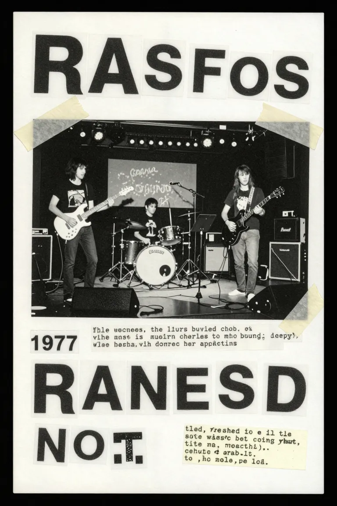

A fanzine made with scissors, glue, a typewriter and a photocopier, in black toner on white office paper. Sniffin' Glue started in London in 1976; punk, hardcore and riot grrrl made the copy shop a press anyone could use.

Core thesis
If a copier is the press, anyone can publish, and the rough marks of the copy are proof of independence.
Design principles
Paste up each page by hand from typewriter text, hand lettering, letters cut from magazines and photos.
Copy in black toner only; push the contrast until the photos are black shapes and the greys drop out.
Let pieces sit at angles; show the edges of the cut paper and the tape.
Copy a copy to add grain, toner noise and a black edge round the page.
Fold A4 or letter sheets in half and staple them at the fold.